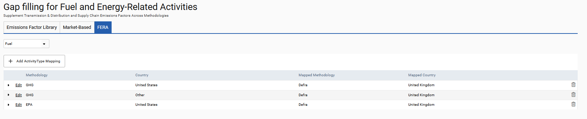

To support this, in the Environment module, there is a new FERA tab (Gap-filling for Fuel and Energy-Related Activities) in Admin Settings > Environment > Customisation > Emission Factors. The tab can be used to set gap-fill rules for FERA emission factors. To set a rule, the user would select a data type (for example, Electricity (Grid)) from the drop-down menu at the top left, then specify that any uploads made to such data sources with emission factors of a particular methodology (for example, CGGI) and country (for example, Canada) will be gap-filled using emission factors of an alternate methodology (for example, GHG) and alternate country (for example, United States). Such rules can be set for Electricity (Grid), Fuel, Heat (Grid) and Road Transport data sources. Note: Rules for transport data containing fuel data are assigned independently from rules for uploads with only distance data.
There are some instances where a one-to-one mapping of one methodology and country to another methodology and country is not possible. For example, for fuel, the EPA methodology publishes emission factors for burning peat, but the Defra methodology does not, so a mapping of such would fail. To support that type of scenario, the tab provides subgrid functionality with which you can specify additional mapping for a data type. For example, you can specify that for any uploads of peat to EPA data sources where the country is United States, you want the biodiesel fuel type used instead. So with a mapping like that, if peat is uploaded to an EPA data source for country United States, the system would instead use the emission factors for biodiesel fuel from perhaps Defra for country United Kingdom.
If using the subgrid functionality, different types of data will require different parameters set. Fuel data, for example, will need mapping for fuel types. For travel data (road business data), vehicle category and sub-category would be required. The mapping you build will depend on the type of data for which you are building it.
